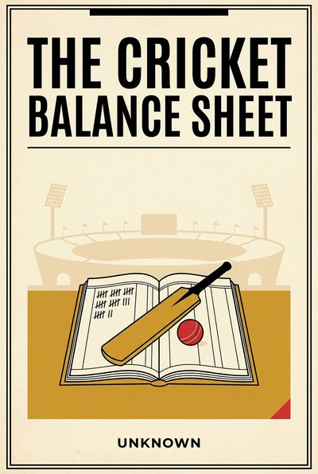

Library › Business & Startups
Cricket's Balance Sheet — Summary & Key Lessons

What the game's money teaches about rights, auctions, star risk and building a franchise that survives a lost season.
📖 OPEN THE FULL INTERACTIVE BREAKDOWN →🌐 Read it in Hindi, Hinglish, Gujarati, Tamil & 22 more languages — free, with audio.
💡 The Big Idea
Cricket is a business school that happens to have a ball. Its modern economy runs on selling attention in bulk (media rights dwarf every gate), on auction mechanics that teach price discovery better than any elective, and on star power that behaves like volatile stock. Franchises rise and die on leverage, pipelines and umpires, exactly like companies. This book reads the sport's public money history, from the broadcast revolution to team insolvencies and the owners who borrowed against glory, and pulls out ten lessons any operator can use: find your stadium-versus-screen revenue, price your rain delay, fund your grassroots pipeline, and never let a franchise's romance sign its loans. The examples are real and on the record; the doctrine is the part the scoreboard never shows.
🧠 The 10 Key Lessons
Lesson 1: The Ticket Is the Tip
Chapter 1: Stadium Versus Screen
Gate money feels like the business and never is: the true economics of the modern game sit in broadcast and digital rights, sold to audiences the stadium cannot hold. Every experience business has the same hidden split between what attendees pay and what remote attention pays, and the operators who find the screen-side of their revenue multiply; the ones who only sell seats plateau.
📖 Example: The IPL's media-rights auctions re-priced the entire sport in single seasons, dwarfing decades of ticket income, while music acts and conference businesses discovered the same curve through streaming and replay economics. Read the full example →
⚡ Do this: Split your revenue into what present customers pay and what remote attention could pay. Design one product for the second audience this quarter.
Lesson 2: Sell the League, Not the Match
Chapter 2: Narrative Inventory
A match is an event; a league is a story with weekly episodes, standings and grudges, and the story is what sponsors and screens actually buy. Recurring narrative converts attention from a one-night purchase into a season-long subscription, which is why franchise loyalty outearns fixture loyalty wherever it is built deliberately.
📖 Example: Franchise leagues worldwide monetize standing tables and rivalries that fixture-based sport cannot, and the smartest consumer brands copied the playbook: serial launches, standings-style community metrics, enemies worth beating weekly. Read the full example →
⚡ Do this: Turn your customer's journey into a season: visible progress, recurring milestones, a scoreboard they care about. One narrative device, shipped this month.
Lesson 3: The Auction Teaches Scarcity
Chapter 3: Price Discovery as Sport
The player auction is a masterclass in honest pricing: a hard cap, a scarce list, open competition, and everyone learns what talent actually costs that year. Fixed prices hide information; auctions manufacture it. Wherever you routinely overpay or underprice, an auction-shaped process, even a simple sealed bid, will teach you the number your pride was protecting.
📖 Example: Franchise auctions revealed the real price of marquee players overnight, spectrum auctions re-priced national airwaves, and the silent market of hiring bonuses does the same for talent every season, whether HR admits it or not. Read the full example →
⚡ Do this: Run one procurement or partnership decision this quarter as a structured, sealed-bid competition among three real candidates. The spread between bids is your education.
Lesson 4: Star Power Is Volatile Stock
Chapter 4: The Hamstring Risk
A marquee name moves tickets and markets, but concentration in one star is concentration in one hamstring: form cycles, injuries and headlines are part of the asset's volatility. Great teams buy depth and build systems that survive an off year, because the franchise's value must not need a single body to be immortal. The same underwriting applies to founders, rainmakers and any irreplaceable colleague.
📖 Example: Team owners who spent superstar money against thin benches watched one bad season erase franchise value, and the owner whose airline debt devoured his cricket empire (the linked case study) remains the sport's ledger lesson in personal-concentration risk. Read the full example →
⚡ Do this: Name your one irreplaceable star and write their hamstring plan: cross-training, documentation, succession. Fund one backup capability this quarter, boring and deliberate.
Lesson 5: Sponsors Buy Audiences, Not Games
Chapter 5: The Attention Invoice
A jersey is not fabric; it is priced reach, and sophisticated sponsors increasingly pay for measurable attention and brand fit rather than logo real estate. Anyone selling sponsorship, or buying it, should price the audience: its size, its fit, its recurrence. The gap between logo pricing and audience pricing is where both value and resentment live.
📖 Example: Jersey sponsors re-price at every rights cycle as measurement improves, and the creator economy forced the same honesty on billboards and podcasts: cost per true attention is the only invoice that survives scrutiny. Read the full example →
⚡ Do this: If you sell attention, publish your audience numbers honestly and price per eyeball-relevance. If you buy it, ask for the same before you renew anything.
Lesson 6: Grassroots Is the Pipeline
Chapter 6: Academies as R&D
Every great team's cheap decade is its academy decade: talent developed young compounds like equity bought pre-IPO, while talent bought at auction pays retail forever. Institutions that stop feeding their pipeline end up renting competence at monopoly prices and calling it strategy. R&D is slow, unglamorous and the only durable answer to market inflation.
📖 Example: Domestic academies feeding national teams, and corporate leadership pipelines like GE's famous Crotonville era, both prove the law: the system that grows its own spends less and keeps more. Read the full example →
⚡ Do this: Fund one long-cycle bet this year that pays in three: a junior hire with room, a trainee program, a community pipeline. Write down the date you expect the return.
Lesson 7: The Umpire Is a Stakeholder
Chapter 7: Regulation as a Playing Condition
The game runs inside rules enforced by authorities who can change the pitch under your feet: playing conditions, financial fair-play, tax and labor law. Champions engage regulators early, honestly and often, treating them as playing conditions to master rather than enemies to lobby. The teams that treat umpires as enemies discover the rulebook has revenge chapters.
📖 Example: Franchise leagues live and die by governance cycles, salary-cap scandals rewrite rosters overnight, and every regulated industry's history has a season where the rulebook, not the rival, decided the title. Read the full example →
⚡ Do this: Write the three rule changes most likely to hurt your business in two years. Meet or message your regulator, association or platform about one of them this quarter, before it is a dispute.
Lesson 8: Rain Delays Are Certain
Chapter 8: Pricing the Washout
Cricket plans for rain the way pilots plan for weather: reduced-over formats, reserve days, insurance, refund ladders. The lesson is not pessimism but engineering: disruption is a scheduled guest, and the operators who pre-price it, in contracts, buffers and alternative formats, keep their promise to customers even when the sky breaks its promise to them.
📖 Example: Duckworth-Lewis turned a washout from a refund crisis into a format, event insurers priced the monsoon into annual calendars, and every supply chain that survived the pandemic had pre-built its own reduced-over plan. Read the full example →
⚡ Do this: Design your washout plan for the one disruption you consider most likely: what you ship, charge and promise if it happens. Put it in the contract this quarter.
Lesson 9: Franchise Debt Is a Trap
Chapter 9: Leverage on Glory
Borrowing against a team's future feels safe because the brand feels immortal, but debt is owed in cash while glory pays in seasons. Franchises and family empires alike have discovered that lenders do not accept nostalgia as collateral, and the leverage that flattered a golden run becomes the auctioneer of the fire sale. Romance borrows; arithmetic repays.
📖 Example: Team insolvencies across leagues, and the airline-and-empire collapse haunting one famous owner, rhyme perfectly: income that depends on form, mood and weather cannot service loans that depend on Tuesdays. Read the full example →
⚡ Do this: Model your debt service against a 30 percent revenue drop and a bad-luck year combined. If the plan needs everything to go right, it is not a plan; it is a prayer. Refinance or deleverage this quarter.
Lesson 10: The Highlight Reel Is the Asset
Chapter 10: The Archive That Pays Forever
Matches end; footage compounds. A rights archive, a content vault, a back catalog earns again every time memory becomes monetizable, which grows only with time. Most businesses sit on their own highlight reels, customer stories, data, designs, records, without inventorying their earning life. The past is a royalties machine for those who kept the tapes.
📖 Example: Classic-match licensing, sports-documentary booms and streaming's appetite for archives re-priced decades of old footage, while brands with photographed, written, recorded histories inherited their own nostalgia at zero cost. Read the full example →
⚡ Do this: Inventory your archive this month: footage, data, stories, designs, testimonials. Pick one asset and give it a new earning life this quarter.
✅ 5-Step Action Plan
- Launch one product for the remote audience that never enters your stadium.
- Turn your customer journey into a season with a visible scoreboard.
- Run one major buy as a three-bid sealed auction this quarter.
- Write the hamstring plan for your irreplaceable star and fund the backup.
- Model debt against a 30 percent drop plus a bad-luck year; fix it before it fixes you.
⚠️ When This Doesn't Work
This is a TheSmallBook Original, published under the name Unknown. It reads cricket's business through the public record (rights auctions, franchise insolvencies, governance episodes) with respect for the game and no inside knowledge claimed; figures are directionally true and deliberately unquantified. It is a management book that happens to use cricket, not a book about cricket.
💀 The Graveyard Proves It
🍾 Vijay Mallya — The King of Good Times' Airline of Bad Math. Burn: ₹9,000 crore, exile. Read the full case study →
💬 Best Quotes from Cricket's Balance Sheet
- “The stadium is the altar, but the money passes at the screen.”
- “A star is a stock with a hamstring.”
- “Never let romance sign the loan.”
Interactive version: mark lessons as read, listen in your language, share quote cards.